1.5. Scipy : 高性能科学计算¶
作者: Adrien Chauve, Andre Espaze, Emmanuelle Gouillart, Gaël Varoquaux, Ralf Gommers
译者: Jay Lei
Scipy
scipy 中有许多科学计算常见问题的工具，比如内置了图像处理，
优化，统计等等相关问题的子模块。
正如GSL库在C和C++中，或者相关工具箱在Matlab中的地位一样， scipy 是Python科学计算环境的核心。
它被设计为利用 numpy 数组进行高效的运行。从这个角度来讲，scipy和numpy是密不可分的。
在执行一段程序前，很有必要检查数据处理是否是已经用Scipy完成了。不专业的程序员或者科学家们经常 会去 重新造轮子 。 多数时候这并不是一件好事，相比于Scipy中优化过的程序，这些新的“轮子”通常 存在缺陷，未完全优化，以及可维护性差，不易分享等等问题。
Chapters contents
警告
这份教程的目的并不是提供一个数值计算的简介。因逐一列举式地去介绍scipy中的各个模块和
函数会显得十分无趣，我们将重点放在了介绍一些能够说明 scipy 在科学计算中的作用的
小例子。
scipy 由一些处理不同任务的子模块构成:
scipy.cluster |
矢量量化 / Kmeans |
scipy.constants |
数学，物理常量 |
scipy.fftpack |
傅里叶变换 |
scipy.integrate |
Integration routines |
scipy.interpolate |
插值计算 |
scipy.io |
数据输入输出 |
scipy.linalg |
线性代数程序 |
scipy.ndimage |
n维图像处理包 |
scipy.odr |
正交距离回归 |
scipy.optimize |
优化 |
scipy.signal |
信号处理 |
scipy.sparse |
稀疏矩阵 |
scipy.spatial |
空间数据结果和算法 |
scipy.special |
特殊数学函数 |
scipy.stats |
统计 |
小技巧
所有的这些子模块都构建在 numpy 基础之上, 但是它们之间绝大部分是相互独立的
引入Numpy和Scipy中这些小模块的标准方式如下所示
>>> import numpy as np
>>> from scipy import stats # same for other sub-modules
scipy 命名空间中直接包含的函数多是真实的numpy函数
(比如 scipy.cos 是 np.cos)。因此，一般来讲你的程序中不会用到 import
scipy 。
1.5.1. 文件输入输出: scipy.io¶
载入和保存matlab文件:
>>> from scipy import io as spio >>> a = np.ones((3, 3)) >>> spio.savemat('file.mat', {'a': a}) # savemat expects a dictionary >>> data = spio.loadmat('file.mat', struct_as_record=True) >>> data['a'] array([[ 1., 1., 1.], [ 1., 1., 1.], [ 1., 1., 1.]])
读取图像:
>>> from scipy import misc >>> misc.imread('fname.png') array(...) >>> # Matplotlib中有一个相似的函数 >>> import matplotlib.pyplot as plt >>> plt.imread('fname.png') array(...)
参见:
- 载入文本文件:
numpy.loadtxt()/numpy.savetxt()- 格式化载入text/csv文件:
numpy.genfromtxt()/numpy.recfromcsv()- 高效快速载入numpy指定类型的，二进制格式文件:
numpy.save()/numpy.load()
1.5.2. 特殊函数: scipy.special¶
这里的特殊函数指的是超越函数。 scipy.special 模块的文档写得很详细，在此
我们仅列出一些常用的特殊函数:
- Bessel函数, 比如
scipy.special.jn()(n阶Bessel函数)- 椭圆函数 (Jacobian椭圆函数
scipy.special.ellipj())- Gamma函数:
scipy.special.gamma(), 另有scipy.special.gammaln()对数形式给出的精确度更高的Gamma函数。- Erf, 高斯曲线下方的面积:
scipy.special.erf()
1.5.3. 线性代数操作: scipy.linalg¶
scipy.linalg 模块提供了基于BLAS和LAPACK的高效的代数操作方法。
scipy.linalg.det()计算方阵的行列式:>>> from scipy import linalg >>> arr = np.array([[1, 2], ... [3, 4]]) >>> linalg.det(arr) -2.0 >>> arr = np.array([[3, 2], ... [6, 4]]) >>> linalg.det(arr) 0.0 >>> linalg.det(np.ones((3, 4))) Traceback (most recent call last): ... ValueError: expected square matrix
scipy.linalg.inv()计算方阵的逆矩阵:>>> arr = np.array([[1, 2], ... [3, 4]]) >>> iarr = linalg.inv(arr) >>> iarr array([[-2. , 1. ], [ 1.5, -0.5]]) >>> np.allclose(np.dot(arr, iarr), np.eye(2)) True
如果计算奇异矩阵(其行列式为0)的逆矩阵，函数会抛出
LinAlgError:>>> arr = np.array([[3, 2], ... [6, 4]]) >>> linalg.inv(arr) Traceback (most recent call last): ... ...LinAlgError: singular matrix
奇异值分解(SVD):
>>> arr = np.arange(9).reshape((3, 3)) + np.diag([1, 0, 1]) >>> uarr, spec, vharr = linalg.svd(arr)
奇异值如下所示:
>>> spec array([ 14.88982544, 0.45294236, 0.29654967])
原始的矩阵可以使用
svd的输出结果和np.dot的乘积重新生成:>>> sarr = np.diag(spec) >>> svd_mat = uarr.dot(sarr).dot(vharr) >>> np.allclose(svd_mat, arr) True
SVD常用于统计和信号处理领域。其他的一些标准分解方法(QR, LU, Cholesky, Schur) 在
scipy.linalg中也能够找到。
1.5.4. 快速傅里叶变换: scipy.fftpack¶
scipy.fftpack模块包含了快速傅里叶变换的功能.
下面是一个噪声信号的例子:
>>> time_step = 0.02
>>> period = 5.
>>> time_vec = np.arange(0, 20, time_step)
>>> sig = np.sin(2 * np.pi / period * time_vec) + \
... 0.5 * np.random.randn(time_vec.size)
观察者不知道信号的频率，只知道信号的采样间隙 sig. 信号是来自真实函数的，那么
傅里叶变换是对称的。 scipy.fftpack.fftfreq()
函数会生成采样频率，scipy.fftpack.fft() 则用于进行快速傅里叶变化:
>>> from scipy import fftpack
>>> sample_freq = fftpack.fftfreq(sig.size, d=time_step)
>>> sig_fft = fftpack.fft(sig)
Because the resulting power is symmetric, only the positive part of the spectrum needs to be used for finding the frequency:
>>> pidxs = np.where(sample_freq > 0)
>>> freqs = sample_freq[pidxs]
>>> power = np.abs(sig_fft)[pidxs]
[source code, hires.png, pdf]
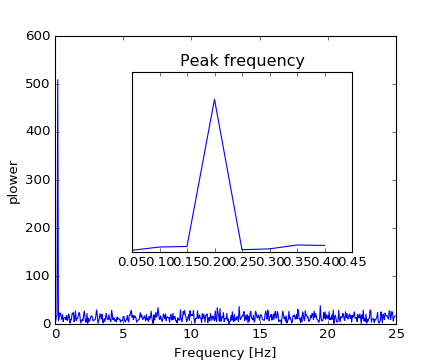{kind=link}
{kind=link}
信号频率可通过如下方式获得:
>>> freq = freqs[power.argmax()]
>>> np.allclose(freq, 1./period) # check that correct freq is found
True
滤去傅里叶变化后的信号中的高频噪声:
>>> sig_fft[np.abs(sample_freq) > freq] = 0
去噪后信号可通过如下方式计算：
scipy.fftpack.ifft() function:
>>> main_sig = fftpack.ifft(sig_fft)
结果如下:
>>> import pylab as plt
>>> plt.figure()
<matplotlib.figure.Figure object at 0x...>
>>> plt.plot(time_vec, sig)
[<matplotlib.lines.Line2D object at 0x...>]
>>> plt.plot(time_vec, main_sig, linewidth=3)
[<matplotlib.lines.Line2D object at 0x...>]
>>> plt.xlabel('Time [s]')
<matplotlib.text.Text object at 0x...>
>>> plt.ylabel('Amplitude')
<matplotlib.text.Text object at 0x...>
[source code, hires.png, pdf]
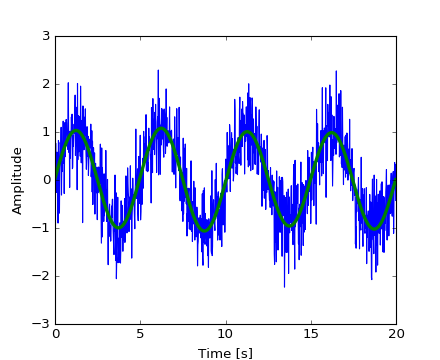{kind=link}
{kind=link}
numpy.fft
Numpy也有一个FFT的子模块 (numpy.fft). 但是Scipy中的FFT更为常用，
因其底层实现更为高效
{kind=link}
{kind=link}
{kind=link}
练习: 去除登月图像中的噪点
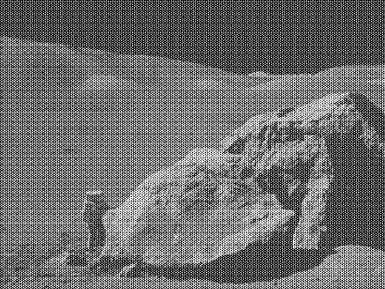{kind=link}
- 如图，moonlanding.png被周期性的噪点所污染。在这个练习中，我们将会使用快速傅里叶变化来进行去噪。
- 使用
pylab.imread()函数读取图像。 - 使用
scipy.fftpack模块中的2维傅里叶变换函数, 画出图像的频谱。不能可视化频谱？哪里出了问题？ - 频谱包含高频和低频成分。而噪声包含在高频部分，通过将这些部分的值有选择性的置为0可达到去噪的目的(利用数组切片特性).
- 使用傅里叶反变换得到图像。
1.5.5. 优化和拟合: scipy.optimize¶
优化用于求解最小化或者等式一类问题的数值解。
scipy.optimize模块提供了求解函数最小值，曲线拟合等算法的实现。>>> from scipy import optimize
求解标量函数的最小值
定义下面的函数:
>>> def f(x):
... return x**2 + 10*np.sin(x)
画出其图像:
>>> x = np.arange(-10, 10, 0.1)
>>> plt.plot(x, f(x))
>>> plt.show()
[source code, hires.png, pdf]
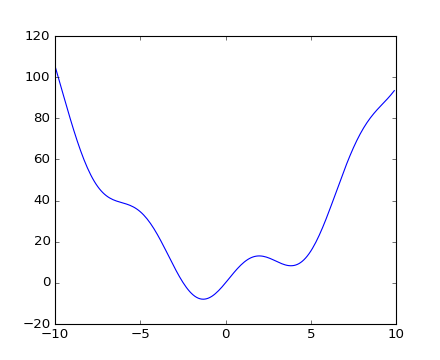{kind=link}
此函数有一个全局最小值，约为-1.3， 还有一个局部最小值，约为3.8。
一个常用的求解此函数最小值的方法是确定初始点，然后执行梯度下降算法。BFGS算法是一个 很好的适用于此的方法:
>>> optimize.fmin_bfgs(f, 0)
Optimization terminated successfully.
Current function value: -7.945823
Iterations: 5
Function evaluations: 24
Gradient evaluations: 8
array([-1.30644003])
这个方法的缺陷在于有时候可能会被困在一个局部最小值，而得不到全局的最小值。 这取决与初始点的选取:
>>> optimize.fmin_bfgs(f, 3, disp=0)
array([ 3.83746663])
如果我们不知道全局最小值的邻近数值，就需要使用那些可以实现全局最优化的算法。比如 scipy.optimize.basinhopping()
包含一个求解局部最小值的算法和一个为该算法提供随机初始点的函数:
0.12.0 新版功能: basinhopping was added in version 0.12.0 of Scipy
>>> optimize.basinhopping(f, 0)
nfev: 1725
minimization_failures: 0
fun: -7.9458233756152845
x: array([-1.30644001])
message: ['requested number of basinhopping iterations completed successfully']
njev: 575
nit: 100
另外一个可用的，但不怎么高效的全局最优化算法是
scipy.optimize.brute() 。在 scipy 中包含的算法之外，还有许多可以实现全局最优化的算法。
这里使一些拥有相关算法的包OpenOpt, IPOPT, PyGMO and PyEvolve。
注解
在老版本的 scipy 中，还包含 退火 算法。
为了找到局部最小值，可以把变量限制在区间``(0, 10)`` 中，
使用 scipy.optimize.fminbound():
>>> xmin_local = optimize.fminbound(f, 0, 10)
>>> xmin_local
3.8374671...
注解
寻找函数的最小值在更高级的章节中有提到: Mathematical optimization: finding minima of functions.
寻找标量函数的零点
例如，求解 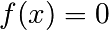 的零点, 其中 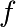 是我们在上面用到的函数。
可以使用 scipy.optimize.fsolve():
>>> root = optimize.fsolve(f, 1) # our initial guess is 1
>>> root
array([ 0.])
从上面的图像中我们可以看出函数 包含两个零点。第二个零点在-2.5附近。 通过调整初始值，我们可以找出精确解:
>>> root2 = optimize.fsolve(f, -2.5)
>>> root2
array([-2.47948183])
曲线拟合
假设我们现在有从函数 中采样得到的含有一些噪声的数据:
>>> xdata = np.linspace(-10, 10, num=20)
>>> ydata = f(xdata) + np.random.randn(xdata.size)
我们已经知道了函数的形式是 (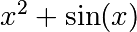 ) 但不知道每一项系数的大小。 我们可以使用最小二乘算法来进行曲线拟合得到系数的值。 首先定义需要进行拟合的函数:
>>> def f2(x, a, b):
... return a*x**2 + b*np.sin(x)
T接着使用 scipy.optimize.curve_fit() 来求解 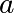 和 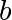:
>>> guess = [2, 2]
>>> params, params_covariance = optimize.curve_fit(f2, xdata, ydata, guess)
>>> params
array([ 0.99667386, 10.17808313])
现在我们已经找到了函数 f 的最小值和零点，并且对采自这个函数的数据进行了曲线拟合的实验。
我们可以把所有的结果呈现在同一张图像上:
[source code, hires.png, pdf]
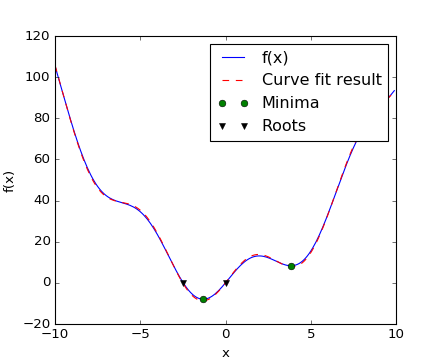{kind=link}
注解
在 Scipy >= 0.11 的版本中，求解最小值和零点的函数可以通过:
scipy.optimize.minimize(),
scipy.optimize.minimize_scalar(),
scipy.optimize.root()。 并且允许使用 method 关键字比较不同的算法.
你可以在 scipy.optimize 中找到适用于多维函数的算法.
练习: 对温度数据进行曲线拟合。
阿拉斯加每月的气温变化都很剧烈, 下面是从一月开始，阿拉斯加每月的温度情况 (单位为摄氏度):
最大值: 17, 19, 21, 28, 33, 38, 37, 37, 31, 23, 19, 18 最小值: -62, -59, -56, -46, -32, -18, -9, -13, -25, -46, -52, -58
- 画出温度图像
- 定义一个可以描述温度最小值和最大值的函数。 提示: 这个函数的周期为一年。 提示: 包含一个时间偏置量。
- 使用
scipy.optimize.curve_fit()来拟合函数。- 画出函数图象。拟合的结果是否合理? 如果不合理，为什么?
- 在拟合精度范围内，温度最大值和最小值的时间偏置量是否一样?
联系: 2-D 最小值求解
[source code, hires.png, pdf]
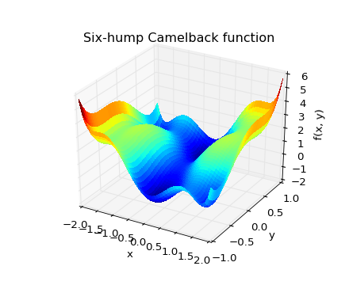驼峰函数
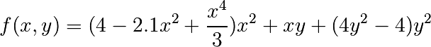
有多个全局和局部最小值。现在需要寻找此函数的全局最小值。
提示:
- 限制变量范围 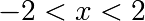 ， 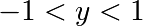。
- 使用
numpy.meshgrid()和pylab.imshow()目测最小值所在区域。- 使用
scipy.optimize.fmin_bfgs()或者其他的用于可以求解多维函数最小值的算法函数有多少个全局最小值点，其对应的函数值是多少？如果初始点为 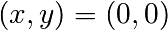 会怎么样?
{kind=link}
更多的例子:ref:summary_exercise_optimize 。
1.5.6. 统计和随机数: scipy.stats¶
scipy.stats包含一些统计和随机过程相关的工具。在numpy.random中可以找到生成多种随机过程的随机数生成器。
1.5.6.1. 直方图和概率密度函数¶
给出随机过程的一系列观察点，它们的直方图即为随机过程概率密度函数的一个估计:
>>> a = np.random.normal(size=1000)
>>> bins = np.arange(-4, 5)
>>> bins
array([-4, -3, -2, -1, 0, 1, 2, 3, 4])
>>> histogram = np.histogram(a, bins=bins, normed=True)[0]
>>> bins = 0.5*(bins[1:] + bins[:-1])
>>> bins
array([-3.5, -2.5, -1.5, -0.5, 0.5, 1.5, 2.5, 3.5])
>>> from scipy import stats
>>> b = stats.norm.pdf(bins) # norm is a distribution
>>> plt.plot(bins, histogram)
[<matplotlib.lines.Line2D object at ...>]
>>> plt.plot(bins, b)
[<matplotlib.lines.Line2D object at ...>]
[source code, hires.png, pdf]
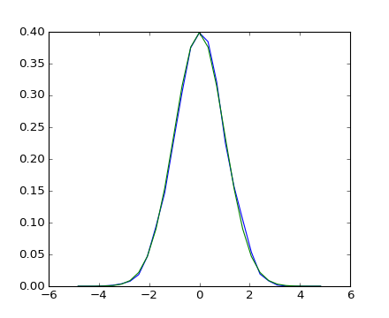{kind=link}
{kind=link}
如果我们事先已经知道所要处理的随机过程属于某一个随机过程族(比如正态过程)，可以采用最大似然估计来 得到相关参数的值。下面是估计正态过程来拟合观察点的例子:
>>> loc, std = stats.norm.fit(a)
>>> loc
0.0314345570...
>>> std
0.9778613090...
练习: 概率分布
从形状参数为1的Gamma分布中取出1000个随机数值，画出它们的直方图。你能在其上画出原分布的 概率密度函数图像吗(它们应该是相似的)？
特别地: 你能根据这些数据点得出Gamma分布的形状参数值吗(使用 fit 方法)？
1.5.6.2. 百分位数¶
中位数:
>>> np.median(a)
0.04041769593...
也叫第50百分位数:
>>> stats.scoreatpercentile(a, 50)
0.0404176959...
相似的，我们可以计算第90百分位数:
>>> stats.scoreatpercentile(a, 90)
1.3185699120...
百分位数是累计概率分布函数的一个估计。
1.5.6.3. 统计检验¶
统计检验的结果常用作一个决策指标。例如，如果我们有两组观察点，它们都来自高斯过程，我们可以使用 T-检验 来判断两组观察点是都显著不同:
>>> a = np.random.normal(0, 1, size=100)
>>> b = np.random.normal(1, 1, size=10)
>>> stats.ttest_ind(a, b)
(array(-3.177574054...), 0.0019370639...)
小技巧
输出结果由以下部分组成:
- T统计量的值: it is a number the sign of which is proportional to the difference between the two random processes and the magnitude is related to the significance of this difference.
- p 值: 两个过程相同的概率。如果其值接近1，那么两个过程几乎可以确定是相同的，如果其值接近0，
那么它们很可能拥有不同的均值。
1.5.7. 插值计算: scipy.interpolate¶
产生一个近似正弦函数的一系列实验数据:
>>> measured_time = np.linspace(0, 1, 10)
>>> noise = (np.random.random(10)*2 - 1) * 1e-1
>>> measures = np.sin(2 * np.pi * measured_time) + noise
:class:`scipy.interpolate.interp1d` 类可以创建一个线性插值函数::
>>> from scipy.interpolate import interp1d
>>> linear_interp = interp1d(measured_time, measures)
:obj:`scipy.interpolate.linear_interp` 实例可以在需要的时候获取某些值::
>>> computed_time = np.linspace(0, 1, 50)
>>> linear_results = linear_interp(computed_time)
三次插值函数可通过 kind 关键字参数得到:
>>> cubic_interp = interp1d(measured_time, measures, kind='cubic')
>>> cubic_results = cubic_interp(computed_time)
所有结果呈现在如下的Matplotlib图像中:
[source code, hires.png, pdf]
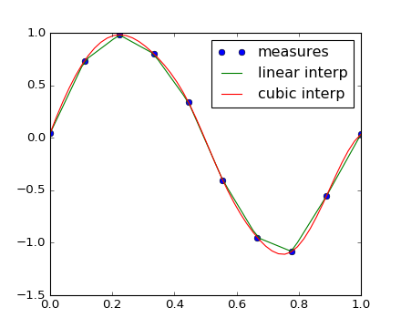{kind=link}
scipy.interpolate.interp2d 和
scipy.interpolate.interp1d 较为相似, 但是其适用对象为二维数组。
获取样条插值的使用实例 Maximum wind speed prediction at the Sprogø station 。
1.5.8. Numerical integration: scipy.integrate¶
The most generic integration routine is scipy.integrate.quad():
>>> from scipy.integrate import quad
>>> res, err = quad(np.sin, 0, np.pi/2)
>>> np.allclose(res, 1)
True
>>> np.allclose(err, 1 - res)
True
Others integration schemes are available with fixed_quad,
quadrature, romberg.
scipy.integrate also features routines for integrating Ordinary
Differential Equations (ODE). In particular, scipy.integrate.odeint()
is a general-purpose integrator using LSODA (Livermore Solver for
Ordinary Differential equations with Automatic method switching
for stiff and non-stiff problems), see the ODEPACK Fortran library
for more details.
odeint solves first-order ODE systems of the form:
dy/dt = rhs(y1, y2, .., t0,...)
As an introduction, let us solve the ODE 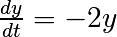 between 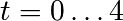, with the initial condition 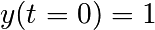. First the function computing the derivative of the position needs to be defined:
>>> def calc_derivative(ypos, time, counter_arr):
... counter_arr += 1
... return -2 * ypos
...
An extra argument counter_arr has been added to illustrate that the
function may be called several times for a single time step, until solver
convergence. The counter array is defined as:
>>> counter = np.zeros((1,), dtype=np.uint16)
The trajectory will now be computed:
>>> from scipy.integrate import odeint
>>> time_vec = np.linspace(0, 4, 40)
>>> yvec, info = odeint(calc_derivative, 1, time_vec,
... args=(counter,), full_output=True)
Thus the derivative function has been called more than 40 times (which was the number of time steps):
>>> counter
array([129], dtype=uint16)
and the cumulative number of iterations for each of the 10 first time steps can be obtained by:
>>> info['nfe'][:10]
array([31, 35, 43, 49, 53, 57, 59, 63, 65, 69], dtype=int32)
Note that the solver requires more iterations for the first time step.
The solution yvec for the trajectory can now be plotted:
[source code, hires.png, pdf]
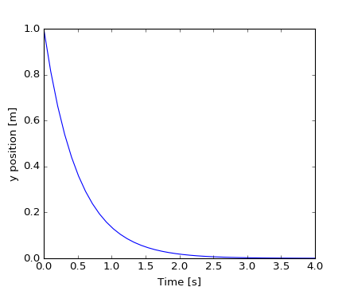
{kind=link}
{kind=link}
Another example with scipy.integrate.odeint() will be a damped
spring-mass oscillator (2nd order oscillator).
The position of a mass attached to a spring obeys the 2nd order ODE
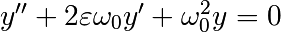 with
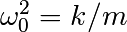 with 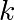 the spring constant, 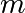 the mass
and 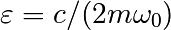 with 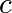 the damping coefficient.
For this example, we choose the parameters as:
>>> mass = 0.5 # kg
>>> kspring = 4 # N/m
>>> cviscous = 0.4 # N s/m
so the system will be underdamped, because:
>>> eps = cviscous / (2 * mass * np.sqrt(kspring/mass))
>>> eps < 1
True
For the scipy.integrate.odeint() solver the 2nd order equation
needs to be transformed in a system of two first-order equations for
the vector 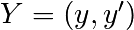. It will be convenient to define
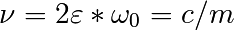 and 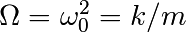:
>>> nu_coef = cviscous / mass # nu
>>> om_coef = kspring / mass # Omega
Thus the function will calculate the velocity and acceleration by:
>>> def calc_deri(yvec, time, nu, om):
... return (yvec[1], -nu * yvec[1] - om * yvec[0])
...
>>> time_vec = np.linspace(0, 10, 100)
>>> yinit = (1, 0)
>>> yarr = odeint(calc_deri, yinit, time_vec, args=(nu_coef, om_coef))
The final position and velocity are shown on the following Matplotlib figure:
[source code, hires.png, pdf]
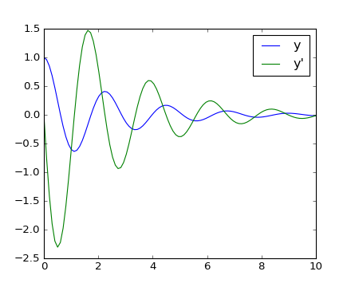{kind=link}
{kind=link}
These two examples were only Ordinary Differential Equations (ODE). However, there is no Partial Differential Equations (PDE) solver in Scipy. Some Python packages for solving PDE’s are available, such as fipy or SfePy.
1.5.9. 信号处理: scipy.signal¶
>>> from scipy import signal
scipy.signal.detrend(): 去除信号中的线形趋势:>>> t = np.linspace(0, 5, 100) >>> x = t + np.random.normal(size=100) >>> plt.plot(t, x, linewidth=3) [<matplotlib.lines.Line2D object at ...>] >>> plt.plot(t, signal.detrend(x), linewidth=3) [<matplotlib.lines.Line2D object at ...>]
[source code, hires.png, pdf]
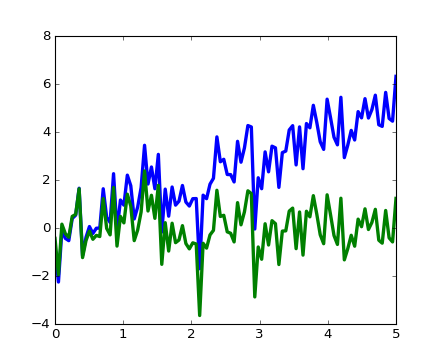scipy.signal.resample(): 使用FFT对信号重采样:>>> t = np.linspace(0, 5, 100) >>> x = np.sin(t) >>> plt.plot(t, x, linewidth=3) [<matplotlib.lines.Line2D object at ...>] >>> plt.plot(t[::2], signal.resample(x, 50), 'ko') [<matplotlib.lines.Line2D object at ...>]
[source code, hires.png, pdf]
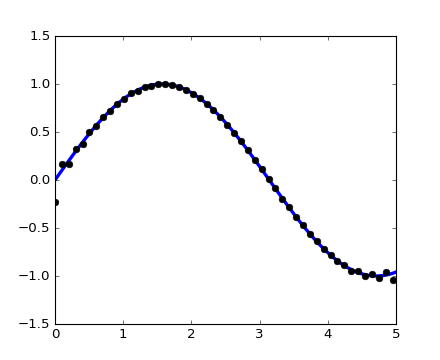scipy.signal提供许多的窗函数:scipy.signal.hamming(),scipy.signal.bartlett(),scipy.signal.blackman()...scipy.signal也提供了滤波的相关函数 (中值滤波器scipy.signal.medfilt(), 维纳滤波器scipy.signal.wiener())， 详情参见随后的图像一节。
{kind=link}
{kind=link}
{kind=link}
{kind=link}
1.5.10. 图像处理: scipy.ndimage¶
The submodule dedicated to image processing in scipy is scipy.ndimage.
>>> from scipy import ndimage
Image processing routines may be sorted according to the category of processing they perform.
1.5.10.1. Geometrical transformations on images¶
Changing orientation, resolution, ..
>>> from scipy import misc
>>> face = misc.face(gray=True)
>>> shifted_face = ndimage.shift(face, (50, 50))
>>> shifted_face2 = ndimage.shift(face, (50, 50), mode='nearest')
>>> rotated_face = ndimage.rotate(face, 30)
>>> cropped_face = face[50:-50, 50:-50]
>>> zoomed_face = ndimage.zoom(face, 2)
>>> zoomed_face.shape
(1536, 2048)
{kind=link}
>>> plt.subplot(151)
<matplotlib.axes._subplots.AxesSubplot object at 0x...>
>>> plt.imshow(shifted_face, cmap=plt.cm.gray)
<matplotlib.image.AxesImage object at 0x...>
>>> plt.axis('off')
(-0.5, 1023.5, 767.5, -0.5)
>>> # etc.
1.5.10.2. Image filtering¶
>>> from scipy import misc
>>> face = misc.face(gray=True)
>>> face = face[:512, -512:] # crop out square on right
>>> import numpy as np
>>> noisy_face = np.copy(face).astype(np.float)
>>> noisy_face += face.std() * 0.5 * np.random.standard_normal(face.shape)
>>> blurred_face = ndimage.gaussian_filter(noisy_face, sigma=3)
>>> median_face = ndimage.median_filter(noisy_face, size=5)
>>> from scipy import signal
>>> wiener_face = signal.wiener(noisy_face, (5, 5))

Many other filters in scipy.ndimage.filters and scipy.signal
can be applied to images.
Exercise
Compare histograms for the different filtered images.
1.5.10.3. Mathematical morphology¶
Mathematical morphology is a mathematical theory that stems from set theory. It characterizes and transforms geometrical structures. Binary (black and white) images, in particular, can be transformed using this theory: the sets to be transformed are the sets of neighboring non-zero-valued pixels. The theory was also extended to gray-valued images.

Elementary mathematical-morphology operations use a structuring element in order to modify other geometrical structures.
Let us first generate a structuring element
>>> el = ndimage.generate_binary_structure(2, 1)
>>> el
array([[False, True, False],
[...True, True, True],
[False, True, False]], dtype=bool)
>>> el.astype(np.int)
array([[0, 1, 0],
[1, 1, 1],
[0, 1, 0]])
Erosion
>>> a = np.zeros((7, 7), dtype=np.int) >>> a[1:6, 2:5] = 1 >>> a array([[0, 0, 0, 0, 0, 0, 0], [0, 0, 1, 1, 1, 0, 0], [0, 0, 1, 1, 1, 0, 0], [0, 0, 1, 1, 1, 0, 0], [0, 0, 1, 1, 1, 0, 0], [0, 0, 1, 1, 1, 0, 0], [0, 0, 0, 0, 0, 0, 0]]) >>> ndimage.binary_erosion(a).astype(a.dtype) array([[0, 0, 0, 0, 0, 0, 0], [0, 0, 0, 0, 0, 0, 0], [0, 0, 0, 1, 0, 0, 0], [0, 0, 0, 1, 0, 0, 0], [0, 0, 0, 1, 0, 0, 0], [0, 0, 0, 0, 0, 0, 0], [0, 0, 0, 0, 0, 0, 0]]) >>> #Erosion removes objects smaller than the structure >>> ndimage.binary_erosion(a, structure=np.ones((5,5))).astype(a.dtype) array([[0, 0, 0, 0, 0, 0, 0], [0, 0, 0, 0, 0, 0, 0], [0, 0, 0, 0, 0, 0, 0], [0, 0, 0, 0, 0, 0, 0], [0, 0, 0, 0, 0, 0, 0], [0, 0, 0, 0, 0, 0, 0], [0, 0, 0, 0, 0, 0, 0]])
Dilation
>>> a = np.zeros((5, 5)) >>> a[2, 2] = 1 >>> a array([[ 0., 0., 0., 0., 0.], [ 0., 0., 0., 0., 0.], [ 0., 0., 1., 0., 0.], [ 0., 0., 0., 0., 0.], [ 0., 0., 0., 0., 0.]]) >>> ndimage.binary_dilation(a).astype(a.dtype) array([[ 0., 0., 0., 0., 0.], [ 0., 0., 1., 0., 0.], [ 0., 1., 1., 1., 0.], [ 0., 0., 1., 0., 0.], [ 0., 0., 0., 0., 0.]])
Opening
>>> a = np.zeros((5, 5), dtype=np.int) >>> a[1:4, 1:4] = 1 >>> a[4, 4] = 1 >>> a array([[0, 0, 0, 0, 0], [0, 1, 1, 1, 0], [0, 1, 1, 1, 0], [0, 1, 1, 1, 0], [0, 0, 0, 0, 1]]) >>> # Opening removes small objects >>> ndimage.binary_opening(a, structure=np.ones((3, 3))).astype(np.int) array([[0, 0, 0, 0, 0], [0, 1, 1, 1, 0], [0, 1, 1, 1, 0], [0, 1, 1, 1, 0], [0, 0, 0, 0, 0]]) >>> # Opening can also smooth corners >>> ndimage.binary_opening(a).astype(np.int) array([[0, 0, 0, 0, 0], [0, 0, 1, 0, 0], [0, 1, 1, 1, 0], [0, 0, 1, 0, 0], [0, 0, 0, 0, 0]])
Closing:
ndimage.binary_closing
Exercise
Check that opening amounts to eroding, then dilating.
An opening operation removes small structures, while a closing operation fills small holes. Such operations can therefore be used to “clean” an image.
>>> a = np.zeros((50, 50))
>>> a[10:-10, 10:-10] = 1
>>> a += 0.25 * np.random.standard_normal(a.shape)
>>> mask = a>=0.5
>>> opened_mask = ndimage.binary_opening(mask)
>>> closed_mask = ndimage.binary_closing(opened_mask)

Exercise
Check that the area of the reconstructed square is smaller than the area of the initial square. (The opposite would occur if the closing step was performed before the opening).
For gray-valued images, eroding (resp. dilating) amounts to replacing a pixel by the minimal (resp. maximal) value among pixels covered by the structuring element centered on the pixel of interest.
>>> a = np.zeros((7, 7), dtype=np.int)
>>> a[1:6, 1:6] = 3
>>> a[4, 4] = 2; a[2, 3] = 1
>>> a
array([[0, 0, 0, 0, 0, 0, 0],
[0, 3, 3, 3, 3, 3, 0],
[0, 3, 3, 1, 3, 3, 0],
[0, 3, 3, 3, 3, 3, 0],
[0, 3, 3, 3, 2, 3, 0],
[0, 3, 3, 3, 3, 3, 0],
[0, 0, 0, 0, 0, 0, 0]])
>>> ndimage.grey_erosion(a, size=(3, 3))
array([[0, 0, 0, 0, 0, 0, 0],
[0, 0, 0, 0, 0, 0, 0],
[0, 0, 1, 1, 1, 0, 0],
[0, 0, 1, 1, 1, 0, 0],
[0, 0, 3, 2, 2, 0, 0],
[0, 0, 0, 0, 0, 0, 0],
[0, 0, 0, 0, 0, 0, 0]])
1.5.10.4. Measurements on images¶
Let us first generate a nice synthetic binary image.
>>> x, y = np.indices((100, 100))
>>> sig = np.sin(2*np.pi*x/50.) * np.sin(2*np.pi*y/50.) * (1+x*y/50.**2)**2
>>> mask = sig > 1
Now we look for various information about the objects in the image:
>>> labels, nb = ndimage.label(mask)
>>> nb
8
>>> areas = ndimage.sum(mask, labels, range(1, labels.max()+1))
>>> areas
array([ 190., 45., 424., 278., 459., 190., 549., 424.])
>>> maxima = ndimage.maximum(sig, labels, range(1, labels.max()+1))
>>> maxima
array([ 1.80238238, 1.13527605, 5.51954079, 2.49611818,
6.71673619, 1.80238238, 16.76547217, 5.51954079])
>>> ndimage.find_objects(labels==4)
[(slice(30L, 48L, None), slice(30L, 48L, None))]
>>> sl = ndimage.find_objects(labels==4)
>>> import pylab as pl
>>> pl.imshow(sig[sl[0]])
<matplotlib.image.AxesImage object at ...>

See the summary exercise on Image processing application: counting bubbles and unmolten grains for a more advanced example.
1.5.11. Summary exercises on scientific computing¶
The summary exercises use mainly Numpy, Scipy and Matplotlib. They provide some real-life examples of scientific computing with Python. Now that the basics of working with Numpy and Scipy have been introduced, the interested user is invited to try these exercises.
Exercises:
Proposed solutions: